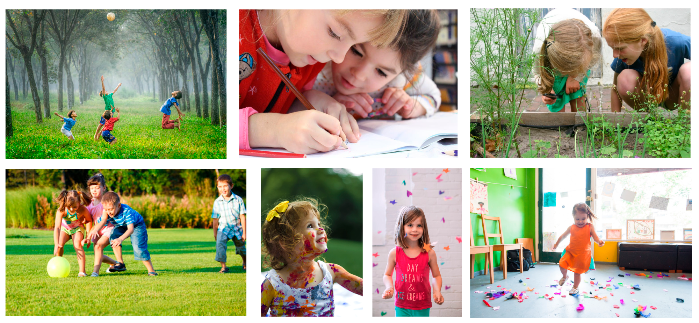

De elementen
op deze pagina vindt u meer informatie omtrent het gebruik van de patronen en illustraties
op deze pagina vindt u meer informatie omtrent het gebruik van de patronen en illustraties
De huisstijl van Vrije Basisschool De Loopbrug is opgebouwd rond enkele vaste elementen die terugkeren in de grafische toepassingen van de school. Een patroon dat zeker niet kan ontbreken in de huisstijl van de school. Het patroon bevat kleine speelse ‘loopbruggen’, deze worden weergegeven in verschillende kleuren en posities. Dit patroon kan op de verschillende toepassingen ingezet worden, zoals bijvoorbeeld op de website, nieuwsbrief, folder, textiel,...
Het eerste patroon wordt voornamelijk gebruikt aan de randen van druk- en digitaalwerk. Dit patroon kan worden toegepast op de website, nieuwsbrieven, folders,...
Het tweede patroon is bedoeld om lege ruimte op te vullen. Dit patroon wordt vooral gebruikt op badges en textiel. De plaatsing en kleuren zijn vrij te kiezen naargelang de beschikbare ruimte.
Illustraties zijn niet weg te denken bij de huisstijl van Vrije Basisschool De Loopbrug. De illustraties zijn een busje, een jongen en een meisje. Deze illustraties zorgen voor een duidelijke visuele stijl waarmee de school zich kan onderscheiden ten opzichte van andere scholen.
De illustraties mogen gebruikt worden in de verschillende onderdelen zoals de folder, nieuwsbrief, website,... . De kleuren van de illustraties mogen aangepast worden. De kleuraanpassingen dienen binnen de huisstijlkleuren van de school te gebeuren.
Via onderstaande knop kunt u de illustratie downloaden. De map bevat een png, svg, pdf en eps-bestand.
Via onderstaande knop kunt u de illustratie downloaden. De map bevat een png, svg, pdf en eps-bestand.
Download hier alle bestanden van de illustratie. De map bevat een png, svg, pdf en eps-bestand.
Iconen, zoals op de website, op de visitekaartjes,... worden steeds op dezelfde manier weergegeven. Aan de linkerbovenzijde is telkens een stukje uit elk icoon gehaald. Zo is er steeds een duidelijke stijl aanwezig. Wat zorgt voor herkenbaarheid.
Doorheen de verschillende communicatieonderdelen komen foto's terug. Afbeeldingen hebben de kracht om een ontwerp visueel te versterken en dragen bij aan de sfeer. Kies daarom voor foto's die bij de school passen. De foto's van Vrije Basisschool De Loopbrug moeten positiviteit en energie uitstralen. Kies daarom voor foto's waarop kinderen spelen en/of leren. Bij voorkeur bevatten de foto's ook een link naar de rustige en groene omgeving van de school.
Gebruik altijd goede kwaliteitsfoto’s. Foto’s van lage kwaliteit geven een slecht beeld. Liefst geen foto's die afkomstig zijn van het internet. Stockfot's van Google, Pexels, Unsplash, ... geven een verkeerd beeld. Dergelijke foto's komen niet Belgisch en 'echt' over.
Hieronder ziet u enkele voorbeelden.
